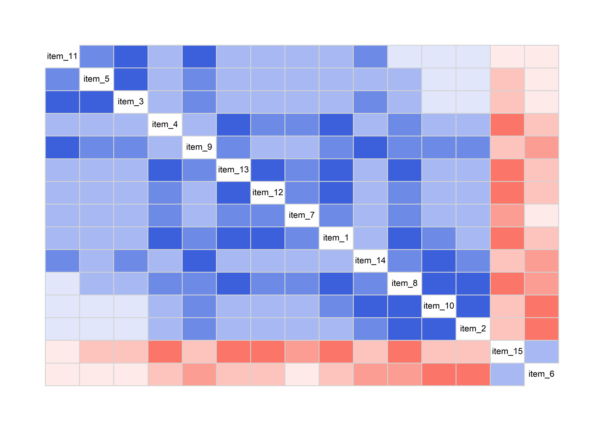

Bei der konfirmatorischen Faktorenanalyse (CFA) sind wir etwas sicherer als bei der explorativen Schwester, denn hier haben wir bereits eine Idee davon welche Faktorenstruktur unseren Daten zugrunde liegt. Mit der CFA können wir also überprüfen, ob unsere Daten zu dem theoretischen Modell passen. Das beurteilen wir anhand des Modell-Fits.
Alle Berechnungen und Abbildungen können wir mit unseren Standardpaketen durchführen. Wir benötigen das tidyverse zum Data Wrangling und zur Visualisierung der Daten. haven benötigen wir für den Import von SPSS-Dateien und rstatix für statistische Analysen. Wenn man sich den Import und das Bereinigen der Daten sparen möchte (Schritte, die man dennoch üben sollte), findet man die Daten auch im Paket costatcompanion.
Für die CFA benötigen wir das Paket lavaan, für Korrelogramme das Paket corrgram.
Bei der explorativen Faktorenanalyse haben wir bereits den Fragebogen zur Freude an Festivitäten (FFF) kennengelernt, bei dem wir eine zugrundeliegende Struktur mit drei latenten Faktoren vermuten. Diese drei Faktoren waren “Vorfreude”, “Tanzen” und “Geselligkeit”. Nun sind wir auf mehrere Feiern und in Clubs im Raum Dortmund gegangen und haben den Fragebogen 442 Probanden erneut ausfüllen lassen. Nun wollen wir überprüfen, ob die in der ersten Stichprobe gefundene Faktorenstruktur auch für diese Stichprobe angemessen ist.
Die neuen Daten finden wir in der Datei party_people.sav im GitHub-Repository, oder als party_people im costatcompanion.
## # A tibble: 442 x 16
## id item_1 item_2 item_3 item_4 item_5 item_6 item_7 item_8 item_9 item_10
## <chr> <dbl> <dbl> <dbl> <dbl> <dbl> <dbl> <dbl> <dbl> <dbl> <dbl>
## 1 1 5.95 3.96 3.11 4.29 5.69 5.53 7.36 4.82 4.07 6.14
## 2 2 4.77 2.74 3.80 4.93 4.61 6.83 6.32 6.67 4.70 2.64
## 3 3 5.34 6.44 6.98 5.24 3.91 3.30 4.90 5.41 4.60 6.24
## 4 4 3.25 4.61 5.49 2.83 5.03 5.52 2.17 2.72 3.39 3.06
## 5 5 7.17 6.64 6.28 6.78 5.03 5.17 4.16 5.53 6.29 7.92
## 6 6 4.29 7.51 6.01 8.74 7.42 3.43 5.67 6.31 7.90 10
## 7 7 1.60 2.91 2.99 5.16 4.29 4.16 5.06 6.58 3.48 5.92
## 8 8 6.20 6.50 3.48 3.33 4.70 3.58 4.94 1.18 4.49 3.72
## 9 9 6.18 6.05 5.44 5.94 4.28 4.53 3.99 4.13 5.43 6.18
## 10 10 3.77 6.63 6.01 5.01 5.06 3.65 2.59 3.46 5.26 6.11
## # ... with 432 more rows, and 5 more variables: item_11 <dbl>, item_12 <dbl>,
## # item_13 <dbl>, item_14 <dbl>, item_15 <dbl>Siehe die Voraussetzungen bei der EFA, wobei Bartlett und KMO hier entfallen. Die Daten sollten pro Item nicht unbedingt schief sein und jeder Faktor sollte mit mindestens 3 Items/Variablen geschätzt werden.
Eine gute Übersicht über das Vorgehen ist bei Schreiber (2017, S. 635) dargestellt.
Eine gute Idee ist es, wie immer, sich die Daten vorher einmal anzuschauen. Um uns die Arbeit einfacher zu machen, entfernen wir aber zunächst wieder die Probanden ID.
## # A tibble: 442 x 15
## item_1 item_2 item_3 item_4 item_5 item_6 item_7 item_8 item_9 item_10
## <dbl> <dbl> <dbl> <dbl> <dbl> <dbl> <dbl> <dbl> <dbl> <dbl>
## 1 5.95 3.96 3.11 4.29 5.69 5.53 7.36 4.82 4.07 6.14
## 2 4.77 2.74 3.80 4.93 4.61 6.83 6.32 6.67 4.70 2.64
## 3 5.34 6.44 6.98 5.24 3.91 3.30 4.90 5.41 4.60 6.24
## 4 3.25 4.61 5.49 2.83 5.03 5.52 2.17 2.72 3.39 3.06
## 5 7.17 6.64 6.28 6.78 5.03 5.17 4.16 5.53 6.29 7.92
## 6 4.29 7.51 6.01 8.74 7.42 3.43 5.67 6.31 7.90 10
## 7 1.60 2.91 2.99 5.16 4.29 4.16 5.06 6.58 3.48 5.92
## 8 6.20 6.50 3.48 3.33 4.70 3.58 4.94 1.18 4.49 3.72
## 9 6.18 6.05 5.44 5.94 4.28 4.53 3.99 4.13 5.43 6.18
## 10 3.77 6.63 6.01 5.01 5.06 3.65 2.59 3.46 5.26 6.11
## # ... with 432 more rows, and 5 more variables: item_11 <dbl>, item_12 <dbl>,
## # item_13 <dbl>, item_14 <dbl>, item_15 <dbl>## # A tibble: 15 x 13
## variable n min max median q1 q3 iqr mad mean sd se
## <chr> <dbl> <dbl> <dbl> <dbl> <dbl> <dbl> <dbl> <dbl> <dbl> <dbl> <dbl>
## 1 item_1 442 0 10 4.80 3.71 6.13 2.42 1.76 4.91 1.78 0.085
## 2 item_10 442 0.059 10 4.96 3.85 6.13 2.28 1.71 5.01 1.74 0.083
## 3 item_11 442 0.904 9.60 5.12 4.01 6.16 2.15 1.57 5.14 1.67 0.079
## 4 item_12 442 0 9.78 5.04 3.90 6.27 2.36 1.72 5.05 1.68 0.08
## 5 item_13 442 0 10 5.06 3.76 6.14 2.37 1.74 4.97 1.71 0.081
## 6 item_14 442 0 9.81 4.97 3.92 6.15 2.22 1.64 4.98 1.74 0.083
## 7 item_15 442 1.04 9.88 4.99 3.86 6.2 2.34 1.72 5.03 1.61 0.077
## 8 item_2 442 0.329 9.03 4.94 3.87 6.05 2.17 1.60 5.00 1.62 0.077
## 9 item_3 442 0 9.93 5.05 3.96 6.22 2.25 1.69 5.07 1.65 0.079
## 10 item_4 442 0.097 10 4.90 3.91 6.08 2.17 1.65 4.94 1.71 0.081
## 11 item_5 442 0.213 9.59 5.05 4.14 6.11 1.97 1.52 5.11 1.56 0.074
## 12 item_6 442 0 9.86 5.03 3.96 6.02 2.06 1.55 4.96 1.50 0.072
## 13 item_7 442 0.43 8.71 4.93 3.95 5.84 1.89 1.41 4.88 1.48 0.071
## 14 item_8 442 0.087 10 5.02 3.73 6.32 2.59 1.93 5.00 1.91 0.091
## 15 item_9 442 0 9.88 5.16 3.90 6.34 2.44 1.79 5.10 1.82 0.086
## # ... with 1 more variable: ci <dbl>
Bei der CFA müssen wir falsch herum codierte Items übrigens nicht umkodieren; dadurch würde sich nur das Vorzeichen des standardisierten Pfadkoeffizienten ändern, der Modell-Fit jedoch nicht.
Zunächst müssen wir das hypothetische Modell definieren. Aus der EFA ging hervor, dass auf dem Faktor “Vorfreude” die Items 1, 4, 7, 12, 13 und 15 laden. Zum Faktor “Tanzen” sollen die Items 3, 5, 9 und 11 gehören und zum Faktor “Geselligkeit” die Items 2, 6, 8, 10 und 14. Das Modell müssen wir in der lavaan-Syntax formulieren, die relativ selbsterklärend ist. (Reflektive) Faktoren werden durch =~ definiert und die Syntax muss in Anführgungszeichen stehen ('').
party_model <- '
anticipation =~ item_1 + item_4 + item_7 + item_12 + item_13 + item_15
dancing =~ item_3 + item_5 + item_9 + item_11
socializing =~ item_2 + item_6 + item_8 + item_10 + item_14
'Dieses Modell können wir dann mit der Funktion cfa() schätzen lassen. Die Ergebnisse speichern wir in einem Objekt, um uns danach eine Zusammenfassung ausgeben zu lassen.
## lavaan 0.6-6 ended normally after 43 iterations
##
## Estimator ML
## Optimization method NLMINB
## Number of free parameters 33
##
## Number of observations 442
##
## Model Test User Model:
##
## Test statistic 320.076
## Degrees of freedom 87
## P-value (Chi-square) 0.000
##
## Parameter Estimates:
##
## Standard errors Standard
## Information Expected
## Information saturated (h1) model Structured
##
## Latent Variables:
## Estimate Std.Err z-value P(>|z|)
## anticipation =~
## item_1 1.000
## item_4 0.853 0.069 12.343 0.000
## item_7 0.633 0.060 10.589 0.000
## item_12 0.835 0.068 12.302 0.000
## item_13 0.931 0.070 13.356 0.000
## item_15 -0.826 0.065 -12.663 0.000
## dancing =~
## item_3 1.000
## item_5 0.766 0.080 9.548 0.000
## item_9 1.094 0.099 11.077 0.000
## item_11 0.953 0.089 10.738 0.000
## socializing =~
## item_2 1.000
## item_6 -0.805 0.080 -10.011 0.000
## item_8 1.318 0.108 12.219 0.000
## item_10 1.189 0.098 12.111 0.000
## item_14 1.005 0.094 10.685 0.000
##
## Covariances:
## Estimate Std.Err z-value P(>|z|)
## anticipation ~~
## dancing 0.763 0.110 6.948 0.000
## socializing 0.853 0.109 7.834 0.000
## dancing ~~
## socializing 0.562 0.090 6.245 0.000
##
## Variances:
## Estimate Std.Err z-value P(>|z|)
## .item_1 1.485 0.127 11.704 0.000
## .item_4 1.687 0.131 12.851 0.000
## .item_7 1.526 0.112 13.645 0.000
## .item_12 1.637 0.127 12.875 0.000
## .item_13 1.471 0.121 12.104 0.000
## .item_15 1.439 0.114 12.647 0.000
## .item_3 1.425 0.133 10.676 0.000
## .item_5 1.676 0.131 12.812 0.000
## .item_9 1.726 0.161 10.728 0.000
## .item_11 1.583 0.138 11.452 0.000
## .item_2 1.484 0.120 12.397 0.000
## .item_6 1.533 0.115 13.329 0.000
## .item_8 1.672 0.151 11.037 0.000
## .item_10 1.442 0.128 11.249 0.000
## .item_14 1.876 0.145 12.902 0.000
## anticipation 1.675 0.203 8.240 0.000
## dancing 1.305 0.182 7.168 0.000
## socializing 1.124 0.159 7.084 0.000Der Output ist schon ziemlich ausführlich, aber richtig informativ wird er, wenn wir uns die standardisierten Koeffizienten und zusätzliche Fit-Measures ausgeben lassen.
## lavaan 0.6-6 ended normally after 43 iterations
##
## Estimator ML
## Optimization method NLMINB
## Number of free parameters 33
##
## Number of observations 442
##
## Model Test User Model:
##
## Test statistic 320.076
## Degrees of freedom 87
## P-value (Chi-square) 0.000
##
## Model Test Baseline Model:
##
## Test statistic 2257.910
## Degrees of freedom 105
## P-value 0.000
##
## User Model versus Baseline Model:
##
## Comparative Fit Index (CFI) 0.892
## Tucker-Lewis Index (TLI) 0.869
##
## Loglikelihood and Information Criteria:
##
## Loglikelihood user model (H0) -11849.897
## Loglikelihood unrestricted model (H1) -11689.859
##
## Akaike (AIC) 23765.794
## Bayesian (BIC) 23900.807
## Sample-size adjusted Bayesian (BIC) 23796.080
##
## Root Mean Square Error of Approximation:
##
## RMSEA 0.078
## 90 Percent confidence interval - lower 0.069
## 90 Percent confidence interval - upper 0.087
## P-value RMSEA <= 0.05 0.000
##
## Standardized Root Mean Square Residual:
##
## SRMR 0.076
##
## Parameter Estimates:
##
## Standard errors Standard
## Information Expected
## Information saturated (h1) model Structured
##
## Latent Variables:
## Estimate Std.Err z-value P(>|z|) Std.lv Std.all
## anticipation =~
## item_1 1.000 1.294 0.728
## item_4 0.853 0.069 12.343 0.000 1.104 0.648
## item_7 0.633 0.060 10.589 0.000 0.819 0.553
## item_12 0.835 0.068 12.302 0.000 1.081 0.645
## item_13 0.931 0.070 13.356 0.000 1.204 0.705
## item_15 -0.826 0.065 -12.663 0.000 -1.069 -0.665
## dancing =~
## item_3 1.000 1.142 0.691
## item_5 0.766 0.080 9.548 0.000 0.875 0.560
## item_9 1.094 0.099 11.077 0.000 1.250 0.689
## item_11 0.953 0.089 10.738 0.000 1.089 0.654
## socializing =~
## item_2 1.000 1.060 0.657
## item_6 -0.805 0.080 -10.011 0.000 -0.854 -0.568
## item_8 1.318 0.108 12.219 0.000 1.397 0.734
## item_10 1.189 0.098 12.111 0.000 1.261 0.724
## item_14 1.005 0.094 10.685 0.000 1.065 0.614
##
## Covariances:
## Estimate Std.Err z-value P(>|z|) Std.lv Std.all
## anticipation ~~
## dancing 0.763 0.110 6.948 0.000 0.516 0.516
## socializing 0.853 0.109 7.834 0.000 0.622 0.622
## dancing ~~
## socializing 0.562 0.090 6.245 0.000 0.464 0.464
##
## Variances:
## Estimate Std.Err z-value P(>|z|) Std.lv Std.all
## .item_1 1.485 0.127 11.704 0.000 1.485 0.470
## .item_4 1.687 0.131 12.851 0.000 1.687 0.581
## .item_7 1.526 0.112 13.645 0.000 1.526 0.695
## .item_12 1.637 0.127 12.875 0.000 1.637 0.584
## .item_13 1.471 0.121 12.104 0.000 1.471 0.503
## .item_15 1.439 0.114 12.647 0.000 1.439 0.557
## .item_3 1.425 0.133 10.676 0.000 1.425 0.522
## .item_5 1.676 0.131 12.812 0.000 1.676 0.686
## .item_9 1.726 0.161 10.728 0.000 1.726 0.525
## .item_11 1.583 0.138 11.452 0.000 1.583 0.572
## .item_2 1.484 0.120 12.397 0.000 1.484 0.569
## .item_6 1.533 0.115 13.329 0.000 1.533 0.678
## .item_8 1.672 0.151 11.037 0.000 1.672 0.461
## .item_10 1.442 0.128 11.249 0.000 1.442 0.476
## .item_14 1.876 0.145 12.902 0.000 1.876 0.623
## anticipation 1.675 0.203 8.240 0.000 1.000 1.000
## dancing 1.305 0.182 7.168 0.000 1.000 1.000
## socializing 1.124 0.159 7.084 0.000 1.000 1.000Diesen Output kann man mit dem Paket broom natürlich auch tidy machen, um sie weiter verwenden zu können, oder um mit glance() einen schnellen Blick auf die Fit-Measures zu kriegen.
## # A tibble: 36 x 9
## term op estimate std.error statistic p.value std.lv std.all std.nox
## <chr> <chr> <dbl> <dbl> <dbl> <dbl> <dbl> <dbl> <dbl>
## 1 anticipati~ =~ 1 0 NA NA 1.29 0.728 0.728
## 2 anticipati~ =~ 0.853 0.0691 12.3 0 1.10 0.648 0.648
## 3 anticipati~ =~ 0.633 0.0598 10.6 0 0.819 0.553 0.553
## 4 anticipati~ =~ 0.835 0.0679 12.3 0 1.08 0.645 0.645
## 5 anticipati~ =~ 0.931 0.0697 13.4 0 1.20 0.705 0.705
## 6 anticipati~ =~ -0.826 0.0652 -12.7 0 -1.07 -0.665 -0.665
## 7 dancing =~~ =~ 1 0 NA NA 1.14 0.691 0.691
## 8 dancing =~~ =~ 0.766 0.0802 9.55 0 0.875 0.560 0.560
## 9 dancing =~~ =~ 1.09 0.0988 11.1 0 1.25 0.689 0.689
## 10 dancing =~~ =~ 0.953 0.0888 10.7 0 1.09 0.654 0.654
## # ... with 26 more rows## # A tibble: 1 x 17
## agfi AIC BIC cfi chisq npar rmsea rmsea.conf.high srmr tli
## <dbl> <dbl> <dbl> <dbl> <dbl> <dbl> <dbl> <dbl> <dbl> <dbl>
## 1 0.878 23766. 23901. 0.892 320. 33 0.0779 0.0871 0.0761 0.869
## # ... with 7 more variables: converged <lgl>, estimator <chr>, ngroups <int>,
## # missing_method <chr>, nobs <int>, norig <int>, nexcluded <int>Es gibt unzählige “Vorgaben” oder “Grenzen”, in die diese Fit-Measures fallen sollen , damit ein Modell “akzeptabel” ist. Wenn man mit diesen Kriterien arbeiten möchte, ist es falsch, ein “Schwarz-Weiß-”, oder “Alles-oder-Nichts-Denken” an den Tag zu legen. Nur weil ein (willkürlich gewähltes) Kriterium knapp nicht erfüllt wird, muss das Modell nicht schlecht sein. Es kommt, wie immer bei Faktorenanalysen, zunächst einmal auf die Interpretierbarkeit des Modells an.
Wer solche Kriterien nutzen möchte, ist bei Schreiber (2017, S. 639) gut aufgehoben. Die wichtigsten Fit-Measures sind in der unteren Tabelle.
| Name | Abkürzung | Regel | N-sensitiv | Bestraft Komplexität |
|---|---|---|---|---|
| Chi-Quadrat | - | Verhältnis von Chi-Quadrat/df < 3 oder < 2 für geschachtelte Modelle | Ja | Nein |
| Tucker-Lewis Index | TLI | >= .95, sollte nahe 1 sein | Nein | Ja |
| Comparative Fit Index | CFI | >= .95, sollte nahe 1 sein | Nein | Ja |
| Root Mean Square Residual | RMR | Je keiner, desto besser; 0 wäre perfekt | Ja | Nein |
| Standardized RMR | SRMR | <= .08 | Ja | Nein |
| Root Mean Square Error of Approximation | RMSEA | < .05 | Ja (bei kleinem N) | Ja |
Unser Modell passt für diese Daten also nicht optimal, jediglich der SRMR wäre im akzeptierten Bereich. An dieser Stelle aber noch einmal der Hinweis: Diese Grenzen sind willkürlich!
Holzinger & Swineford (1939)
holzinger_model <- '
visual =~ x1 + x2 + x3
textual =~ x4 + x5 + x6
speed =~ x7 + x8 + x9
'
holzinger_fit <- cfa(holzinger_model, data = HolzingerSwineford1939)
summary(holzinger_fit, standardized = TRUE, fit.measures = TRUE)## lavaan 0.6-6 ended normally after 35 iterations
##
## Estimator ML
## Optimization method NLMINB
## Number of free parameters 21
##
## Number of observations 301
##
## Model Test User Model:
##
## Test statistic 85.306
## Degrees of freedom 24
## P-value (Chi-square) 0.000
##
## Model Test Baseline Model:
##
## Test statistic 918.852
## Degrees of freedom 36
## P-value 0.000
##
## User Model versus Baseline Model:
##
## Comparative Fit Index (CFI) 0.931
## Tucker-Lewis Index (TLI) 0.896
##
## Loglikelihood and Information Criteria:
##
## Loglikelihood user model (H0) -3737.745
## Loglikelihood unrestricted model (H1) -3695.092
##
## Akaike (AIC) 7517.490
## Bayesian (BIC) 7595.339
## Sample-size adjusted Bayesian (BIC) 7528.739
##
## Root Mean Square Error of Approximation:
##
## RMSEA 0.092
## 90 Percent confidence interval - lower 0.071
## 90 Percent confidence interval - upper 0.114
## P-value RMSEA <= 0.05 0.001
##
## Standardized Root Mean Square Residual:
##
## SRMR 0.065
##
## Parameter Estimates:
##
## Standard errors Standard
## Information Expected
## Information saturated (h1) model Structured
##
## Latent Variables:
## Estimate Std.Err z-value P(>|z|) Std.lv Std.all
## visual =~
## x1 1.000 0.900 0.772
## x2 0.554 0.100 5.554 0.000 0.498 0.424
## x3 0.729 0.109 6.685 0.000 0.656 0.581
## textual =~
## x4 1.000 0.990 0.852
## x5 1.113 0.065 17.014 0.000 1.102 0.855
## x6 0.926 0.055 16.703 0.000 0.917 0.838
## speed =~
## x7 1.000 0.619 0.570
## x8 1.180 0.165 7.152 0.000 0.731 0.723
## x9 1.082 0.151 7.155 0.000 0.670 0.665
##
## Covariances:
## Estimate Std.Err z-value P(>|z|) Std.lv Std.all
## visual ~~
## textual 0.408 0.074 5.552 0.000 0.459 0.459
## speed 0.262 0.056 4.660 0.000 0.471 0.471
## textual ~~
## speed 0.173 0.049 3.518 0.000 0.283 0.283
##
## Variances:
## Estimate Std.Err z-value P(>|z|) Std.lv Std.all
## .x1 0.549 0.114 4.833 0.000 0.549 0.404
## .x2 1.134 0.102 11.146 0.000 1.134 0.821
## .x3 0.844 0.091 9.317 0.000 0.844 0.662
## .x4 0.371 0.048 7.779 0.000 0.371 0.275
## .x5 0.446 0.058 7.642 0.000 0.446 0.269
## .x6 0.356 0.043 8.277 0.000 0.356 0.298
## .x7 0.799 0.081 9.823 0.000 0.799 0.676
## .x8 0.488 0.074 6.573 0.000 0.488 0.477
## .x9 0.566 0.071 8.003 0.000 0.566 0.558
## visual 0.809 0.145 5.564 0.000 1.000 1.000
## textual 0.979 0.112 8.737 0.000 1.000 1.000
## speed 0.384 0.086 4.451 0.000 1.000 1.000Holzinger, K. J., & Swineford, F. (1939). A study in factor analysis: the stability of a bi-factor solution. Supplementary Educational Monographs, 48, xi + 91.
Schreiber, J. B. (2017). Update to core reporting practices in structural equation modeling. Research in Social & Administrative Pharmacy, 13(3), 634–643. https://doi.org/10.1016/j.sapharm.2016.06.006